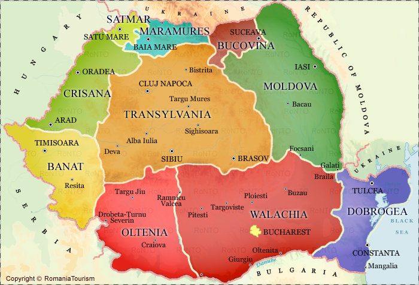

<div style="display: flex; justify-content: center; margin-top: 30px;">
  Selecteaza Transilvania, Moldova sau walachia.
</div>

<div style="display: flex; justify-content: center; margin-top: 30px;">
  

  <map name="romania">
    <area shape="poly" coords="200,120, 390,130, 390,270, 200,270" alt="transilvania" title="Transilvania" href="transilvania.html" target="_blank">
    <area shape="poly" coords="460,70, 540,70, 540,250, 460,250" alt="moldova" title="Moldova" href="moldova.html" target="_blank">
    <area shape="poly" coords="310,300, 530,290, 530,420 310,420" alt="walachia" title="Walachia" href="walachia.html" target="_blank">
  </map>
</div>